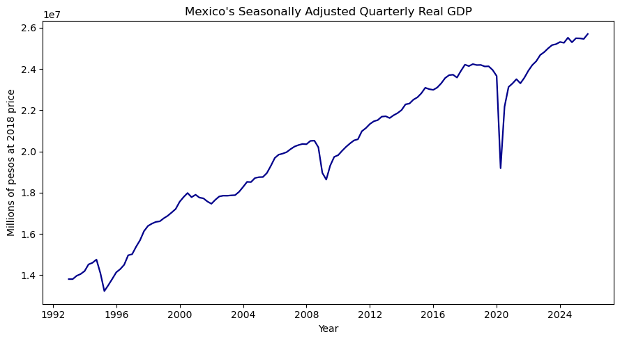

import pandas as pd
import numpy as np
import matplotlib.pyplot as plt#
mexico_gdp = pd.read_excel("pibt_cte_valor.xlsx")values = pd.to_numeric(mexico_gdp.iloc[5, 2:])
# Create quarterly dates starting in 1993 Q1
quarters = pd.period_range(
start="1993Q1",
periods=len(values),
freq="Q"
)
# Organize the data
gdp_clean = gdp_clean[
gdp_clean["Quarter"] <= pd.Period("2025Q4", freq="Q")
].copy()gdp_clean| Quarter | Real_GDP | |
|---|---|---|
| 0 | 1993Q1 | 1.380463e+07 |
| 1 | 1993Q2 | 1.380375e+07 |
| 2 | 1993Q3 | 1.396407e+07 |
| 3 | 1993Q4 | 1.405191e+07 |
| 4 | 1994Q1 | 1.419417e+07 |
| ... | ... | ... |
| 127 | 2024Q4 | 2.529083e+07 |
| 128 | 2025Q1 | 2.548670e+07 |
| 129 | 2025Q2 | 2.548058e+07 |
| 130 | 2025Q3 | 2.545387e+07 |
| 131 | 2025Q4 | 2.569449e+07 |
132 rows × 2 columns
gdp_clean.describe()| Real_GDP | |
|---|---|
| count | 1.320000e+02 |
| mean | 2.012116e+07 |
| std | 3.511100e+06 |
| min | 1.322474e+07 |
| 25% | 1.774866e+07 |
| 50% | 2.022648e+07 |
| 75% | 2.329772e+07 |
| max | 2.569449e+07 |
Log_GDP= np.log(gdp_clean["Real_GDP"])gdp_clean["Log_Real_GDP"] = np.log(gdp_clean["Real_GDP"])gdp_clean["GDP_Growth"] = (
100 * gdp_clean["Log_Real_GDP"].diff()
)
gdp_clean| Quarter | Real_GDP | Log_Real_GDP | GDP_Growth | |
|---|---|---|---|---|
| 0 | 1993Q1 | 1.380463e+07 | 16.440515 | NaN |
| 1 | 1993Q2 | 1.380375e+07 | 16.440451 | -0.006413 |
| 2 | 1993Q3 | 1.396407e+07 | 16.451998 | 1.154741 |
| 3 | 1993Q4 | 1.405191e+07 | 16.458269 | 0.627091 |
| 4 | 1994Q1 | 1.419417e+07 | 16.468342 | 1.007291 |
| ... | ... | ... | ... | ... |
| 127 | 2024Q4 | 2.529083e+07 | 17.045952 | -0.883594 |
| 128 | 2025Q1 | 2.548670e+07 | 17.053667 | 0.771485 |
| 129 | 2025Q2 | 2.548058e+07 | 17.053427 | -0.024005 |
| 130 | 2025Q3 | 2.545387e+07 | 17.052378 | -0.104861 |
| 131 | 2025Q4 | 2.569449e+07 | 17.061787 | 0.940847 |
132 rows × 4 columns
gdp_clean.describe()| Real_GDP | Log_Real_GDP | GDP_Growth | |
|---|---|---|---|
| count | 1.320000e+02 | 132.000000 | 131.000000 |
| mean | 2.012116e+07 | 16.801276 | 0.474254 |
| std | 3.511100e+06 | 0.182458 | 2.615576 |
| min | 1.322474e+07 | 16.397600 | -20.964020 |
| 25% | 1.774866e+07 | 16.691820 | 0.059965 |
| 50% | 2.022648e+07 | 16.822503 | 0.669056 |
| 75% | 2.329772e+07 | 16.963866 | 1.084922 |
| max | 2.569449e+07 | 17.061787 | 14.471375 |
fig, ax = plt.subplots(figsize=(9, 5))
gdp_clean["Date"] = gdp_clean["Quarter"].dt.to_timestamp()
ax.plot(gdp_clean["Date"], gdp_clean["Real_GDP"], color="darkblue", linewidth=1.6)
ax.set_title("Mexico's Seasonally Adjusted Quarterly Real GDP")
ax.set_xlabel("Year")
ax.set_ylabel("Millions of pesos at 2018 price")
fig.tight_layout()
plt.show()